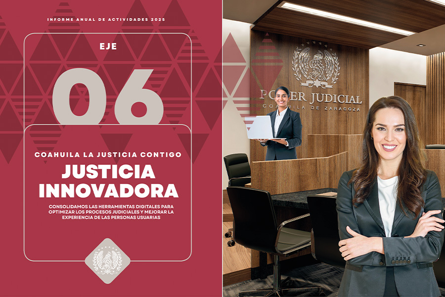
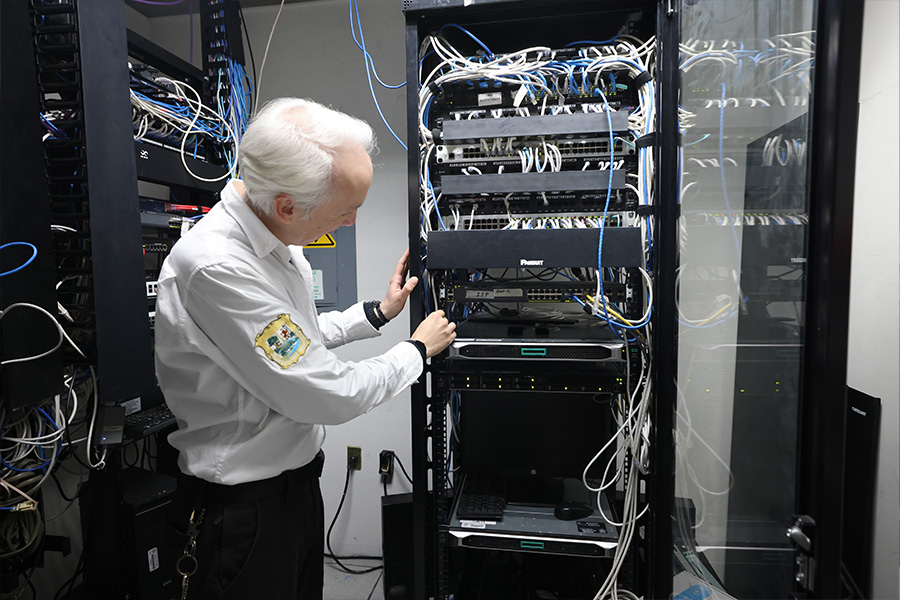
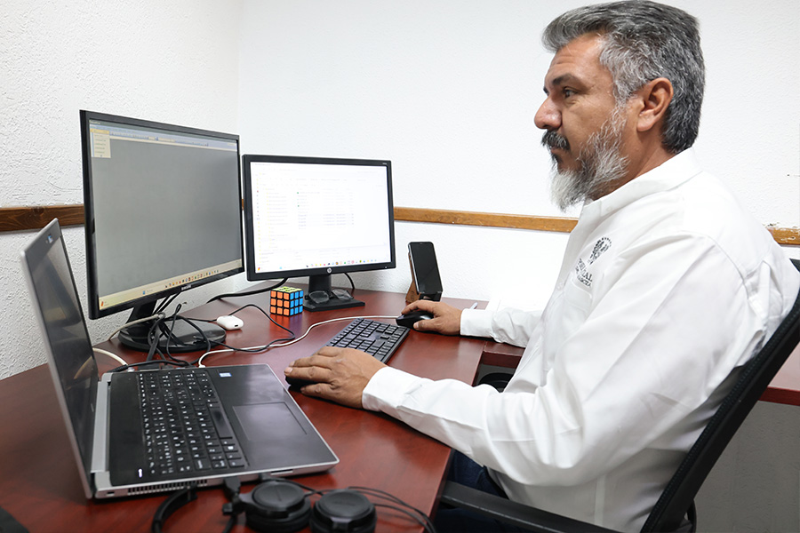
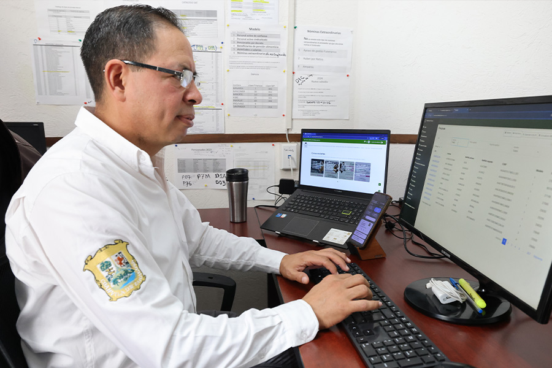
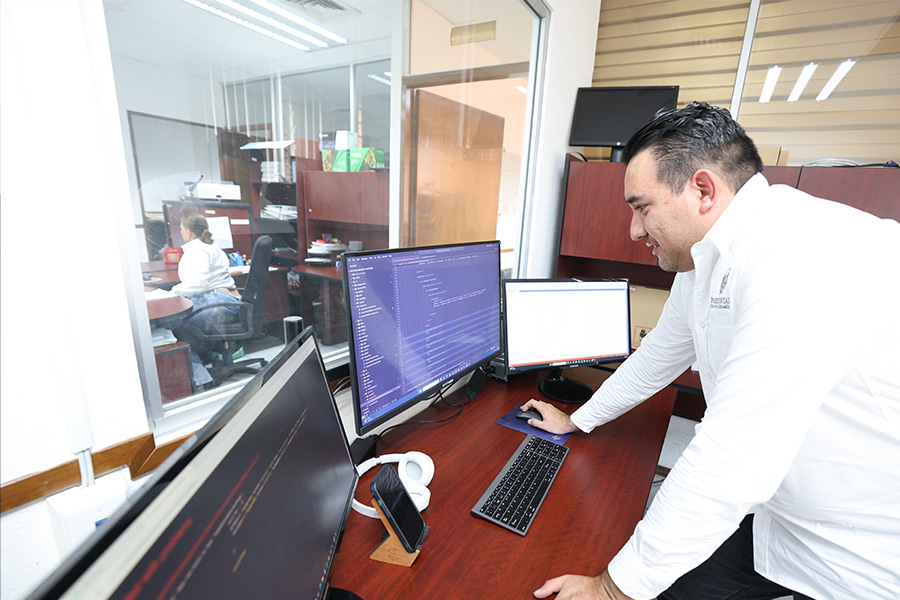

Eje 6 Justicia Innovadora
CONSOLIDAMOS LAS HERRAMIENTAS DIGITALES PARA OPTIMIZAR LOS PROCESOS JUDICIALES Y MEJORAR LA EXPERIENCIA DE LAS PERSONAS USUARIAS
Para el Poder Judicial de Coahuila es indispensable garantizar la transformación y automatización de los procesos jurisdiccionales y administrativos, que permitan reducir tiempos de tramitación, una mejor accesibilidad de las personas usuarias, fortalecer la transparencia y una mayor cercanía de los servicios judiciales.
El impulso a la modernización tecnológica ha permitido contar con alternativas de atención más ágiles, seguras y accesibles, favoreciendo la resolución de conflictos con mayor oportunidad y claridad, y reafirmando a este Poder Judicial como una institución que responde a las exigencias de la sociedad actual y se adapta a los retos tecnológicos del futuro.
Este año judicial constituyó un año de consolidación en la transformación de nuestros servicios. Fortalecimos la plataforma Poder en Línea, integrada por herramientas de justicia digital como el Sistema de Citas, el Buzón Electrónico, el Expediente Virtual y las Boletas Electrónicas de Gestión Actuarial, facilitando a las personas usuarias el acceso a servicios judiciales desde cualquier lugar y en cualquier momento; y materializamos la creación del portal de notarías que, no solo agilizan procesos internos, sino que cristalizan un modelo de justicia diligente y centrado en la persona usuaria.
De manera paralela, durante el periodo que se informa se afianzó la operación de soluciones tecnológicas especializadas para la gestión judicial, reflejando el compromiso institucional con la innovación, la eficiencia procesal y la accesibilidad, en beneficio de todas y todos los coahuilenses.
Durante 2025, continuamos con el fortalecimiento y la modernización de los procesos judiciales mediante el uso intensivo de tecnologías de la información, con el propósito de incrementar la eficiencia en las labores jurisdiccionales y brindar mayor celeridad y seguridad jurídica en los juzgados de primera instancia.
En este contexto, iniciamos con la implementación del Sistema de Administración de Justicia Inteligente (SAJI) en los Distritos Judiciales de Saltillo y Torreón en la materia civil en su especialización hipotecaria.
Adicionalmente, fortalecimos la operación del Sistema de Administración de Gestión Actuarial (SAGA), orientado a mejorar la asignación y el seguimiento de las notificaciones realizadas por las centrales de actuarios, favoreciendo la trazabilidad y el control de diligencias.
Con estas acciones renovamos la impartición de justicia, en la cual la tecnología y la función jurisdiccional convergen para dar respuesta a los desafíos de la era digital en la que la ciudadanía se encuentra inmersa.

Firma Electrónica
Con el propósito de fortalecer la certeza y seguridad jurídica, así como agilizar los procesos y modernizar la gestión documental, mantuvimos el uso de la Firma Electrónica como componente clave de la transformación digital, garantizando la autenticidad documental y fortaleciendo la seguridad en el intercambio de información judicial.
En 2025, registramos la firma electrónica de 214 mil 445 documentos mediante distintas plataformas institucionales, destacando su utilización en el Sistema de Administración de Justicia (SAJI), Poder en Línea, plataformas penales y la Plataforma Web, lo que evidencia su adopción transversal en las áreas del Poder Judicial.
Este resultado fortalece la consolidación de procesos digitales confiables, seguros y eficientes.
Tabla 50. Documentos con firmado electrónico según plataforma que los publica
| Plataforma que utiliza el firmado electrónico | Documentos firmados |
|---|---|
| Actas de visita o inspección ordinaria | 806 |
| Boletas de notificación de Buzón Electrónico | 14,278 |
| Plataformas de Justicia Penal | 26,106 |
| Plataforma Integral de Justicia PAIIJ-PENAL | 17,589 |
| Plataforma Poder en Línea | 24,094 |
| Sistema de Administración de Justicia- SAJI | 130,730 |
| Plataforma Web | 91 |
| Documentos de Consejo de la Judicatura | 19 |
| Sistema de Administración de Gestión Actuarial (SAGA) | 732 |
| Total | 214,445 |
Fuente: Dirección de Innovación de la Oficialía Mayor. Poder Judicial del Estado de Coahuila de Zaragoza. 2025.
Implementación del Sistema de Administración de Justicia Inteligente (SAJI)
El Sistema de Administración de Justicia Inteligente (SAJI) es una solución tecnológica orientada a la administración eficiente y segura de acuerdos, promociones y resoluciones, mejorando el flujo de trabajo, para garantizar una justicia pronta, expedita, innovadora, transparente y abierta.
Actualmente se implementa en los Distritos Judiciales de Saltillo y Torreón, en la materia civil en su especialización hipotecaria, así como en la materia laboral, en las cuales recibimos un total de 41 mil 595 documentos y generamos 30 mil 557 acuerdos gestionados a través de esta plataforma.
Sistemas de Gestión Judicial PAIIJ y SIGE
Mediante los Sistemas de Gestión Judicial PAIIJ y SIGE, operados en los órganos jurisdiccionales de primera instancia, brindamos seguimiento constante a las necesidades de las personas usuarias y promovimos la mejora continua de los procesos.
Durante 2025, estas plataformas permitieron la recepción de 623 mil 934 documentos o trámites, así como la emisión de 689 mil 254 acuerdos, contribuyendo a eficientar los tiempos de atención y a optimizar la gestión de los asuntos judiciales.
Tabla 51. Documentos y trámites recibidos y acuerdos realizados a través de los Sistemas de Gestión del PJECZ
| Distrito Judicial | SIGE | PAIIJ Familiar y Penal | SAJI Laboral e Hipotecario | Total |
|---|---|---|---|---|
| Documentos trámites recibidos | Acuerdos realizados | Documentos trámites recibidos | Acuerdos realizados | |
| Acuña | 9,892 | 9,069 | 10,868 | 13,598 |
| Monclova | 47,967 | 45,489 | 31,545 | 37,655 |
| Parras de la Fuente | 9,491 | 7,099 | 3,938 | 3,929 |
| Región Carbonífera | 11,663 | 11,138 | 8,411 | 10,121 |
| Río Grande | 13,870 | 13,470 | 13,311 | 19,309 |
| Saltillo | 140,023 | 149,360 | 94,351 | 109,068 |
| San Pedro | 10,695 | 11,799 | 8,411 | 10,121 |
| Torreón | 149,990 | 173,935 | 59,508 | 64,094 |
| Total | 393,591 | 421,359 | 230,343 | 267,895 |
Fuente: Dirección de Innovación de la Oficialía Mayor. Poder Judicial del Estado de Coahuila de Zaragoza. 2025.
Portal de Notarías
Durante el periodo que se informa diseñamos el Proyecto Portal de Notarías, una plataforma digital oficial orientada a modernizar y eficientar el proceso de publicación de edictos de las notarías, con aplicación en todos los distritos judiciales del estado.
Este portal permite a las notarías gestionar y publicar directamente sus edictos a través de un entorno digital institucional, lo que representa un avance sustantivo en la agilización del flujo de trabajo. Mediante esta plataforma, los edictos pueden ser publicados de manera inmediata en el sitio web correspondiente, sustituyendo el proceso previo de envío manual por correo electrónico, el cual resultaba más lento y dependiente de intermediarios.
Entre los principales logros de esta actividad destaca la eliminación de la latencia en la difusión pública de documentos notariales, al permitir la publicación directa y oportuna de los edictos por parte de las propias notarías. Este esquema garantiza el cumplimiento inmediato de la obligación de publicación, reduce los tiempos de espera y fortalece la transparencia y eficiencia en el acceso a la información, superando las demoras inherentes a los mecanismos tradicionales de comunicación.
Sitio Web
La mejora continua del sitio web institucional constituye un elemento esencial del Modelo de Justicia, al facilitar el acceso a la información pública y fortalecer la transparencia judicial.
En el periodo que se informa, el sitio web del Poder Judicial registró un millón 225 mil 960 visitas, realizadas por 248 mil 535 personas usuarias, quienes accedieron a información de utilidad sin intermediarios, de manera ágil, sencilla y práctica, en donde la disposición de los elementos del sitio permite una navegación rápida y efectiva.
Para dotar de accesibilidad a la justicia digital, trabajamos en una serie de actualizaciones que mejoran la experiencia de las personas que hacen uso del sitio. Además, realizamos las adaptaciones del sitio en lo que se refiere a la nueva imagen institucional, actualizando sus contenidos gráficos.
De esta forma, no sólo fortalecemos la presencia digital, bajo el principio de accesibilidad, sino que también, optimizamos la gestión de contenidos, reflejando el compromiso de la institución con la innovación tecnológica y la rendición de cuentas.

Plataforma Web
Destaca en este ámbito la consolidación de la Plataforma Web, soportada en tecnologías de vanguardia y arquitecturas escalables, con beneficios para la optimización de procesos internos, la reducción de costos operativos y la disminución del consumo de papel.
En este periodo, publicamos 15 mil 942 listas de acuerdos, seis mil 730 edictos, 21 mil 250 sentencias en versiones públicas, y 65 mil 31 audiencias, fortaleciendo la rendición de cuentas y el acceso ciudadano a la información judicial.
Además, en la plataforma se pueden encontrar estadísticas, glosas, listas de peritos, tesis, jurisprudencias y herramientas de búsqueda y localización de expedientes, entre otros.
Tabla 52. Listas de acuerdos, edictos, sentencias y audiencias publicadas por Distrito Judicial
| Área | Listas de acuerdos | Edictos | Sentencias | Audiencias |
|---|---|---|---|---|
| Distrito Judicial de Acuña | 843 | 455 | 841 | 3,663 |
| Distrito Judicial de Monclova | 2,002 | 632 | 3,249 | 8,464 |
| Distrito Judicial de Parras | 227 | 200 | 199 | 235 |
| Distrito Judicial Región Carbonífera | 902 | 136 | 829 | 7,012 |
| Distrito Judicial de Río Grande | 1,167 | 413 | 1,487 | 6,717 |
| Distrito Judicial de Saltillo | 3,908 | 2,331 | 6,806 | 22,458 |
| Distrito Judicial de San Pedro | 454 | 318 | 671 | 2,698 |
| Distrito Judicial de Torreón | 3,924 | 2,244 | 4,897 | 13,734 |
| Órganos especializados | 224 | 0 | 329 | 32 |
| Pleno del Tribunal Constitucional | 13 | 0 | 0 | 1 |
| Pleno del Tribunal Superior de Justicia | 227 | 1 | 0 | 0 |
| Salas Colegiadas | 919 | 0 | 650 | 17 |
| Tribunales Distritales | 1,132 | 0 | 1,292 | 0 |
| Total | 15,942 | 6,730 | 21,250 | 65,031 |
Fuente: Dirección de Innovación de la Oficialía Mayor. Poder Judicial del Estado de Coahuila de Zaragoza. 2025.
Poder en Línea
Con el objetivo de colocarnos como una institución referente en la modernización judicial, durante 2025, trabajamos para consolidar el uso de la herramienta de Poder en Línea, la cual permite que las personas usuarias pueden realizar diversos trámites y consultas de forma remota, contribuyendo a una gestión judicial más ordenada, evitando traslados innecesarios y acercando la justicia a la ciudadanía.
A través de esta herramienta, es posible realizar de manera electrónica la presentación de demandas, escritos, promociones y anexos; consultar el expediente virtual; agendar citas ante los órganos jurisdiccionales; y solicitar servicios actuariales, facilitando así una interacción más ágil y ordenada con la administración de justicia.
Este sistema permite además dar seguimiento oportuno a cada trámite, mediante un módulo de notificaciones que mantiene informadas a las personas usuarias sobre el estado de sus asuntos, fortaleciendo la transparencia y la confianza en los procesos judiciales.
Tabla 53. Citas agendadas en Poder en Línea, por trámite
| Trámite | Cantidad |
|---|---|
| Cita con actuarios | 1,328 |
| Cita con juezas y jueces | 191 |
| Devolución de documentos | 652 |
| Entrega de demandas iniciales y anexos | 25 |
| Entrega de promociones en oficialía | 5 |
| Entrega de cheques y certificados de depósitos | 247 |
| Expedición de copias simples | 18 |
| Expedición de copias certificadas | 96 |
| Ratificaciones | 319 |
| Revisión de expedientes | 1,247 |
| Tramitación de oficios/edictos/exhortos | 3,195 |
| Total | 7,323 |
Fuente: Dirección de Innovación de la Oficialía Mayor. Poder Judicial del Estado de Coahuila de Zaragoza. 2025.
Expediente Virtual
Impulsamos el Expediente Virtual, integrando mejoras tecnológicas que facilitan la consulta y el seguimiento de los asuntos, así como el fortalecimiento de la seguridad de la información y la disminución del acervo documental físico.
Esta herramienta ha permitido a las personas usuarias revisar sus expedientes a distancia, reduciendo la necesidad de acudir físicamente a las sedes judiciales y optimizando el tiempo de las y los litigantes. En 2025, se autorizaron 29 mil 335 expedientes para consulta remota. Los avances alcanzados reflejan el impacto positivo de la digitalización en la impartición de justicia.
Tabla 54. Expedientes autorizados mediante la plataforma Expediente Virtual 2.0, por Distrito Judicial.
| Distrito | Cantidad |
|---|---|
| Acuña | 1,457 |
| Monclova | 2,712 |
| Parras | 600 |
| Región Carbonífera | 1,337 |
| Río Grande | 2,402 |
| Saltillo | 13,596 |
| San Pedro | 532 |
| Torreón | 6,699 |
| Total | 29,335 |
Fuente: Dirección de Innovación de la Oficialía Mayor. Poder Judicial del Estado de Coahuila de Zaragoza. 2025.
Buzón Electrónico
Consolidamos el Buzón Electrónico como un medio confiable para la presentación de demandas iniciales y promociones desde cualquier lugar y a cualquier hora, brindando una vía ágil y segura para la comunicación con los órganos jurisdiccionales de primera instancia.
Su uso generalizado demuestra la confianza de la comunidad jurídica en los servicios digitales y responde a las exigencias de una sociedad que demanda procesos más rápidos y eficientes.
En 2025, recibimos 507 mil 317 demandas iniciales o promociones provenientes de los ocho distritos judiciales.
Tabla 55. Demandas iniciales o promociones recibidas en el buzón electrónico, por Distrito Judicial
| Distrito | Cantidad |
|---|---|
| Acuña | 15,489 |
| Monclova | 67,452 |
| Parras | 4,172 |
| Región Carbonífera | 18,801 |
| Río Grande | 23,609 |
| Saltillo | 183,377 |
| San Pedro | 17,663 |
| Torreón | 176,754 |
| Total | 507,317 |
Fuente: Dirección de Innovación de la Oficialía Mayor. Poder Judicial del Estado de Coahuila de Zaragoza. 2025.
Boletas Electrónicas de Gestión Actuarial (Boletas de Notificación)
Como parte de las acciones para lograr una justicia más rápida y expedita, fortalecimos el uso del Sistema de Boletas Electrónicas de Gestión Actuarial (BEGA), con el cual se programan y atienden las diligencias, notificaciones y emplazamientos, al permitir que las personas usuarias realicen estos trámites de manera electrónica.
Este esquema facilita el trabajo de las y los notificadores, reduce tiempos de ejecución y contribuye a una mayor certeza y orden en cada actuación.
Derivado de lo anterior, se generaron 22 mil 766 notificaciones mediante el uso de este sistema.
Tabla 56. Notificaciones mediante boletas electrónicas
| Central | Cantidad |
|---|---|
| Saltillo | 20,462 |
| Torreón | 2,304 |
| Total | 22,766 |
Fuente: Dirección de Innovación de la Oficialía Mayor. Poder Judicial del Estado de Coahuila de Zaragoza. 2025.
Sistema de Capacitaciones y Profesionalización del Poder Judicial (SICAP)

El Sistema de Capacitaciones y Profesionalización del Poder Judicial es una herramienta que ha facilitado a las personas usuarias el acceso a cursos, diplomados y convocatorias de manera electrónica, accesible y moderna.
Al cierre del 2025, registramos cuatro mil 714 personas que pudieron acceder a alguna de las 49 actividades académicas ofertadas en esta plataforma. Además, se aplicaron siete mil 923 exámenes en línea y se emitieron cuatro mil 738 constancias y certificados, fortaleciendo la profesionalización y formación continua del personal y de abogadas y abogados externos a la institución.
Destaca que la implementación de este sistema ha permitido reducir el consumo de papel contribuyendo a la sostenibilidad institucional. Este recurso es clave en la modernización de la gestión académica y administrativa del Poder Judicial de Coahuila.
Tabla 57. Áreas que han utilizado el Sistema de Capacitaciones y Profesionalización del Poder Judicial
| Áreas del Poder Judicial | Total de cursos |
|---|---|
| Centro de Medios Alternos de Solución de Controversias | 24 |
| Instituto de Especialización Judicial | 23 |
| Unidad de Derechos Humanos e Igualdad de Género | 2 |
| Fuente: Dirección de Innovación de la Oficialía Mayor. Poder Judicial del Estado de Coahuila de Zaragoza. 2025. |
Tabla 58. Cursos que se han impartido mediante el Sistema de Capacitaciones y Profesionalización del Poder Judicial
| Cursos impartidos | Cantidad |
|---|---|
| Aplicación de examen de conocimientos prácticos, recepción de documentación y evaluación de examen oral | 4 |
| Aplicación de examen de conocimiento teóricos | 29 |
| Aplicación de examen de conocimientos teóricos y evaluación de proyecto final | 1 |
| Aplicación de examen de conocimientos teóricos y recepción de documentación | 5 |
| Curso de capacitación | 4 |
| Curso de capacitación asíncrono | 2 |
| Otorgamiento de constancias de participación | 2 |
| Procedimiento de certificación en mediación | 2 |
Fuente: Dirección de Innovación de la Oficialía Mayor. Poder Judicial del Estado de Coahuila de Zaragoza. 2025.
Servicios de Soporte Técnico
El fortalecimiento de la infraestructura tecnológica es un elemento esencial para el adecuado funcionamiento del Poder Judicial de Coahuila, así como para garantizar una impartición de justicia eficiente y oportuna. En este sentido, dirigimos una atención permanente al soporte técnico, asegurando que las herramientas informáticas utilizadas en las áreas jurisdiccionales, no jurisdiccionales y administrativas operen en condiciones óptimas en todos los distritos judiciales. A través de la atención presencial, telefónica o de asistencia remota, brindamos acompañamiento continuo a las y los servidores judiciales, permitiendo atender incidencias, prevenir fallas y actualizar los equipos conforme a las necesidades institucionales.
Durante el año, nuestro personal de soporte técnico realizó 16 mil 831 acciones de asistencia orientadas tanto al mantenimiento preventivo como correctivo, lo que contribuyó a reducir los efectos de la obsolescencia tecnológica y a fortalecer la continuidad de las labores.

Tabla 59. Solicitudes de Soporte Técnico atendidas, por Distrito Judicial
| Distrito | Soporte técnico |
|---|---|
| Acuña | 220 |
| Monclova | 1,737 |
| Parras | 4 |
| Región Carbonífera | 650 |
| Río Grande | 390 |
| Saltillo | 2,092 |
| San Pedro | 153 |
| Torreón | 1,228 |
| Otros órganos jurisdiccionales y no jurisdiccionales | 10,357 |
| Total | 16,831 |
Fuente: Dirección de Innovación de la Oficialía Mayor. Poder Judicial del Estado de Coahuila de Zaragoza. 2025.
Equipo de Transmisión para las Salas Orales
Con el objetivo de seguir abonando a la transparencia y la eficiencia en la impartición de justicia, reforzamos el Sistema Integrado de Grabación Audiovisual (SIGA) en las salas de audiencia orales de los distintos distritos judiciales del estado, en las materias civil, familiar, laboral y penal. Estas acciones han permitido garantizar registros audiovisuales claros, confiables y de fácil consulta, facilitando la revisión de audiencias y contribuyendo a la certeza jurídica en los procesos.
De manera complementaria, se llevaron a cabo labores de mantenimiento preventivo en las salas ya equipadas, asegurando el adecuado funcionamiento del sistema y la continuidad operativa de los servicios de grabación y transmisión.
Tabla 60. Distribución de nuevas salas de audiencia, por Distrito Judicial y materia
| Distrito | Materia | Total | ||||
|---|---|---|---|---|---|---|
| Civil | Familiar | Mercantil | Laboral | Penal | ||
| Acuña | 0 | 1 | 0 | 1 | 2 | 4 |
| Monclova | 1 | 4 | 1 | 2 | 4 | 12 |
| Región Carbonífera | 1 | 1 | 0 | 1 | 2 | 5 |
| Río Grande | 1 | 2 | 0 | 1 | 4 | 8 |
| Saltillo | 4 | 5 | 3 | 2 | 10 | 24 |
| San Pedro | 0 | 1 | 0 | 0 | 2 | 3 |
| Torreón | 0 | 5 | 3 | 2 | 9 | 19 |
| Total | 7 | 20 | 7 | 9 | 33 | 76 |
Fuente: Dirección de Innovación de la Oficialía Mayor. Poder Judicial del Estado de Coahuila de Zaragoza. 2025.
Equipo de Transmisión para las Salas Colegiadas
En el periodo que se reporta, continuamos con las labores de mantenimiento preventivo y correctivo del equipo de transmisión instalado en las salas de sesiones del Pleno del Tribunal Superior de Justicia, así como en las Salas Colegiadas en Materia Civil y Mercantil, Familiar, Penal y la Sala Regional.
Estas acciones tuvieron como finalidad dar cumplimiento pleno al principio de máxima publicidad en la toma de decisiones y resoluciones jurisdiccionales, permitiendo la transmisión oportuna de las sesiones a través de redes sociales y facilitando que la ciudadanía tenga acceso directo a las actividades jurisdiccionales de estos órganos colegiados.
Adquisición de Equipos de Cómputo
En cumplimiento del objetivo de fortalecer la infraestructura tecnológica de información y comunicación del Poder Judicial del Estado de Coahuila de Zaragoza, durante el periodo que se informa se llevó a cabo la adquisición y distribución de equipos de cómputo destinados a diversas áreas administrativas y jurisdiccionales, con el propósito de asegurar la adecuada ejecución de las tareas y procesos vinculados a la administración e impartición de justicia.
Como resultado de estas acciones, adquirimos y asignamos un total de 241 equipos de cómputo en los distintos distritos judiciales, en atención a las necesidades operativas específicas de cada uno. La distribución se realizó de la siguiente manera: Acuña, 14 equipos; Monclova, siete; Parras, 22; Región Carbonífera, cuatro; Río Grande, 18; San Pedro, cinco; Saltillo, 134; y Torreón, 37.
La renovación y asignación de este equipamiento fortalece las capacidades tecnológicas institucionales, mejora las condiciones de trabajo del personal y contribuye a la operación eficiente de los sistemas informáticos, impactando de manera directa en la calidad de nuestros servicios.
Tabla 61. Distribución de equipos de cómputo adquiridos, por Distrito Judicial
| Distrito Judicial | Equipos asignados |
|---|---|
| Acuña | 14 |
| Monclova | 7 |
| Parras | 22 |
| Región Carbonífera | 4 |
| Río Grande | 18 |
| Saltillo | 134 |
| San Pedro | 5 |
| Torreón | 37 |
| Total | 241 |
Fuente: Dirección de Innovación de la Oficialía Mayor. Poder Judicial del Estado de Coahuila de Zaragoza. 2025.